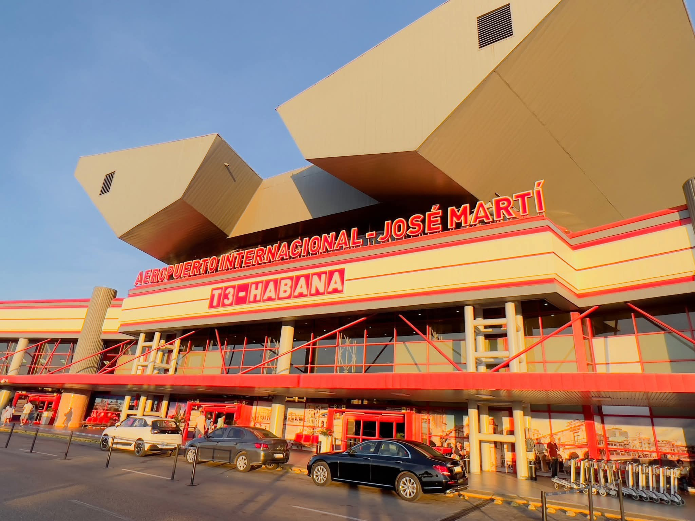

✈️ Aeropuerto 🕒 Según zonaTraslado Aeropuerto José Martí
✈️ Terminales 1, 2 y 3
Llegadas y salidas
🕐 Puntualidad garantizada
Te recogemos en tu alojamiento con tiempo suficiente y te llevamos directo al aeropuerto. También hacemos recogidas en llegadas: monitoreamos tu vuelo y esperamos aunque haya retrasos. Terminales 1, 2 y 3 · Disponible 24 horas.
Reservar traslado aeropuerto